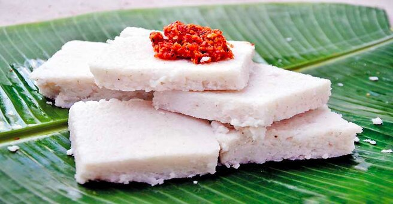

Milk Rice (Kiri Báth) with Lunu Miris
To those of you who are not familiar with the term Kiri Báth, it’s a milk rice dish made up of rice and coconut milk. This recipe can be a real-time-saver when you need to sort out breakfast for a crowd. There are several substitute but Jasmin rice, Basmati rice are recommended. The rice you use is important as it should set firmly once the cooked milk rice is poured onto a plate. Although the traditional shape of cutting the milk rice, is to slice them into diamonds.you can also use any type of cake mold to create the shape you want the milk rice to be. For this purpose, the rice has to be glutinous and sticky once it’s cooked.
INGREDIENTS
- 2 cups of glutinous rice or jasmine rice (for two adults 1/2, a cup of rice)
- 2 cups of water (depend on the type of rice using might need to increase the amount of water by an extra cup of water)
- 1 cup of thick coconut milk
- 3 teaspoon or more salt to taste
- 100g Red onion chopped
- 20g chili flakes
- 1 teaspoon chili powder
- 2-3 teaspoon of lemon juice or lime juice
DIRECTIONS
Rinse the rice thrice or until water runs clear. Transfer rice to a large enough pan. As the rice cooks, the quantity doubles so make sure the pan you use is adequate. Pour in the water (2 cups but depending on the variety of rice you use, increase the amount of water. 1/2 to 1 cup extra). Cook on medium heat, the water will reduce gradually. Make sure to lower the heat as the last bit of water evaporates. At this point you’ll notice the rice is completely cooked through and soft and mushy. Pour in the coconut milk and add sufficient salt to taste. Once salt added taste and check if the salt seasoning is Adequate. Maintain low-medium heat to avoid the rice sticking to the pan.stir occasionally the coconut milk with the rice and leave it to cook on low heat for 10 minutes until the rice has a soft creamy, porridge-like consistency. Take the pan off the heat and leave it to cool for a few minutes(2-3 minutes). Line a cake baking tin with cling film and pour in the rice to the baking pan, then gently even out and flatten the rice to take the shape of the pan. Smooth out the surface of the milk rice with the back of a flat spoon. Once the dish is cool, turn it upside-down over a plate and let the Molded milk rice slide gently to the plate. Let the milk rice cool, most often it is served cold as the milk rice needs to set. Use a knife to slice it into squares or diamond shapes.
put chopped Red onions, chili flakes, chili powder and 1 teaspoon salt into a motor pestle and blitz until it becomes a paste for the lúnú miris. If you don’t have a mortar pestle use electric blender and blend only for second. Take the paste into a bowl add lemon juice or lime juice and mix it well. You can serve the milk rice with lúnú miris. Use chicken gravy for more taste.